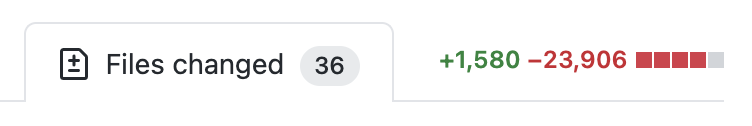
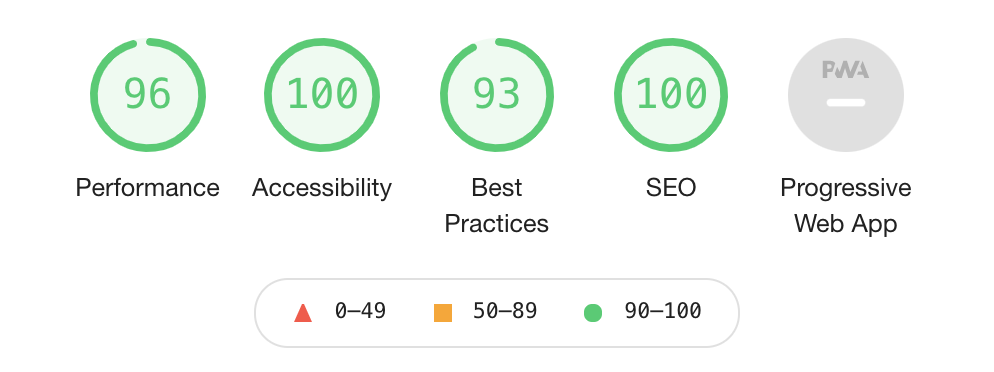

The last time I changed something big on my site was 3+ years ago. I was really into gradient rainbow text and IBM Plex Mono. It was a mild increment over whatever I had before, which was just a cleaned up and colourful version of Left from like 6 years prior. Anyway, what I’m saying is: this website had hella split ends. Here’s the before and after:
But also, why?
I used to write a lot of blog posts, so my website was very blog focused. Originally the home page was just a listing of posts with some copy sprinkled in. As the pandemic hit, I started writing fewer and fewer posts, so having the one post of 2020 show up as a listing was ridiculous.
On top of that, this year I started focusing a lot more on making generative art and I thought it was sad I wasn’t showing that anywhere on the site! The beauty of generative art is that you can just keep generating it over and over again, and my site was a long white column of text. No more!
git diff

Ok so hear me out, this looks bad and that’s because: it is bad. One cute thing my old site had was a <emoji-rain> custom element. You pressed it and got a rain of emoji. Brilliant. The problem is that
I wrote that in like 2017, and used the well deceased v0 version of the web components spec. As a result, it had a gazillion dependencies (rip bower_components) and polyfills and ancient trash. 23906 lines of trash to be exact. Gooood riddance.
The added 1580 lines are a bit of a bore:
- 100 of these are this post.
- another 300 is the HTML Ipsum from CSS tricks because I’m always scared I’m going to break a style on some ancient post.
- 300 lines of JavaScript for the header art that I don’t minify because I’d like to be able to read this in the future to fix whatever mistakes past Monica made, and I don’t have a build step set up. I’m still using the Jekyll that comes out of the box with GitHub pages and I am never looking back.
- the rest is actual code that I touched! There was some really horrifying markup on the project/talks/template pages and now it’s uhhhh slightly less so.
Lighthouse?

Seems fine. The 93 is because I’m running this on localhost, where I don’t have https. I’ll double check
it once after I deploy, but that 96 on performance is sitting fine with me given that I (again) don’t minify anything on this site.
I still don’t have a service worker installed because last time I did it cached things into oblivion, and I make hella typos on my posts and it was a bad time. Who even reads this site? Why would you want it offline? You don’t.
Colours
I tried really hard to add some dreamy pastel blobs randomly in the page. As you can tell from the replies on that tweet, it went to the Bad Place. The thing that worked the most was “blurred spans positioned absolutely” which makes browsers and my soul cry. I also didn’t want to use images, because … I didn’t. Downloading bytes of background images? In this economy??
With pastels out of the way, I went for the exact opposite: bright and patterned. I recently worked on a Bauhaus inspired project for HashiConf (which ended up in the end not looking very Bauhaus at all), so I had a bunch of unused code lying around. Bauhaus aesthetics are all about grids and bold, simple colours – I don’t know if I did it justice, but I certainly tried.
The blog and weaknotes pages are listings of links which I always struggle with and 2021 didn’t fix that. If all the text is a link, and links are meant to be bright, then most of the page is a bright, unreadable scream of colours. So on these pages, the default href styles are gone, and I added some hatching on hover only. That way there’s splotches of colour, but they’re mostly out of the way.
The generative art bits
I experimented with a bunch of basic generative art algorithms for the pages, like animated Perlin noise and grid-based randomness. In the end, I did a variation on a pretty standard Truchet tile grid that you see a lot in beginner generative art tutorials: you have a grid of cells, and each cell can be one of the 4 orientations of a quarter-circle. After staring a bunch at these quarter circles, some started looking like objects: a tulip, a boat, a bird. I kept one of each and painted them in black, so that they pop out.
An accidental p5.js mini-polyfill
I do all of my generative art in p5.js and canvas-sketch because I want to write the least amount of canvas code I can, and most of the time I do that offline and for printing on paper. In this case though this code would live on every single page, and p5.js comes in at a couple hundred kb, most of which I am not actually using. I am a lazy woman with a lot of napping to do; I don’t want to rewrite any of my already written p5.js code! So I ended up writing a little small object that implements only the bits of the p5.js API I was using. Cute eh?
let context;
window.p = {
PI: Math.PI,
HALF_PI: Math.PI / 2,
random: (a, b) => {
if (a !== undefined && b !== undefined) {
return Math.floor(Math.random() * b) + a;
} else {
// Assume a is an array.
const i = Math.floor(Math.random() * a.length);
return a[i];
}
},
fill: (c) => context.fillStyle = c,
stroke: (c) => context.strokeStyle = c,
noFill: () => context.fillStyle = 'transparent',
noStroke: () => context.strokeStyle = 'transparent',
push: () => context.save(),
pop: () => context.restore(),
translate: (x,y) => context.translate(x,y),
scale: (x,y) => context.scale(x,y),
rect: (x,y,w,h) => {
context.fillRect(x, y, w, h);
context.strokeRect(x, y, w, h);
},
circle: (x,y,d) => {
context.beginPath();
context.arc(x, y, d/2, 0, Math.PI * 2, false);
context.fill();
context.stroke();
},
arc: (x, y, w, h, start, stop, slice=false) => {
context.beginPath();
if (!slice) {
context.moveTo(x, y);
}
context.arc(x, y, w/2, start, stop);
context.closePath();
context.fill();
context.stroke();
}
}
Then you get to write your setup and draw functions in almost the same way you would in p5.js.
let context;
window.p = {...}
function mySketch(p) {
function setup() {
// ...
draw();
}
function draw() {
//
}
}
// "Instantiate" our weird "p5.js" "instance" mode.
mySketch(p)
Woof, you made it this far? Slow news day, eh?